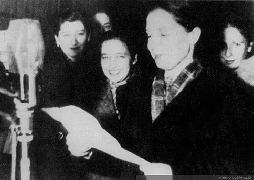

Voto femenino

El 8 de enero de 1949, el presidente Gabriel González Videla firmó la Ley 9.292, que otorgó a las mujeres el derecho a votar y a ser elegidas en elecciones parlamentarias y presidenciales. Fue el resultado de décadas de lucha del movimiento de mujeres. Desde 1934 podían votar en elecciones municipales, y en 1935 se fundó el Movimiento Pro Emancipación de las Mujeres de Chile (MEMCH), impulsado por Elena Caffarena y otras dirigentas. Caffarena y Flor Heredia redactaron un proyecto de sufragio femenino que el gobierno de Pedro Aguirre Cerda envió al Congreso en 1941, pero que no prosperó tras la muerte del presidente. Más tarde, la Federación Chilena de Instituciones Femeninas (FECHIF), en la que destacó Amanda Labarca, encabezó la presión final. Paradójicamente, Caffarena no fue invitada a la ceremonia de promulgación, en un contexto de persecución a los comunistas tras la Ley de Defensa Permanente de la Democracia (1948). Las mujeres votaron por primera vez en una elección presidencial en 1952. La ley amplió de manera decisiva la ciudadanía durante la República Presidencial, aunque la presencia de mujeres en cargos públicos siguió siendo baja por décadas.
Versión para niños
Hace muchos años, en Chile solo los hombres podían votar para elegir al presidente y a los parlamentarios. Muchas mujeres se organizaron durante años para cambiar esa injusticia. Una de ellas fue la abogada Elena Caffarena. Por fin, el 8 de enero de 1949 se firmó la ley que permitió a las mujeres votar en todas las elecciones. En 1952, las chilenas votaron por primera vez para elegir presidente.
Para maestros
Nivel sugerido: 2° medio
Objetivo: Comprender el voto femenino como resultado de la organización de las mujeres y como una ampliación de la ciudadanía en el siglo XX.
Preguntas para la clase:
- ¿Qué argumentos se usaban para negar el voto a las mujeres y cómo los respondieron las sufragistas?
- ¿Por qué el voto femenino tardó tanto en aprobarse?
- ¿Qué otros grupos han conquistado derechos políticos en Chile a lo largo del tiempo?
Actividad (20–30 min): En grupos, los estudiantes construyen una línea de tiempo de la ampliación del derecho a voto en Chile (voto municipal femenino, ley de 1949, cédula única de 1958, voto a los 18 años y a personas analfabetas desde la reforma de 1970) y explican qué cambió en cada hito.
Fuentes sugeridas: Memoria Chilena; Biblioteca del Congreso Nacional (BCN); Museo Histórico Nacional.
Objetivos de Aprendizaje (Currículum Nacional)
- 5° básico · HI05 OA 14 … el Estado debe asegurar los derechos de las personas a participar en la vida pública … y el derecho a sufragio
- 6° básico · HI06 OA 07 Explicar y dar ejemplos de la progresiva democratización de la sociedad durante el siglo XX, considerando el acceso creciente al voto
- 2° medio · HI2M OA 07 Evaluar cómo la participación de nuevos actores sociales … contribuyeron a la democratización de la sociedad chilena … la incorporación de las mujeres a la ciudadanía política
Personajes
Revisión humana pendiente. Cómo se revisa · Reportar un error
Cómo citar: Historia de Chile. (2026). Voto femenino. En Historia de Chile: atlas y línea de tiempo. https://moises-salgado.github.io/historia-de-chile/momento/voto-femenino.html